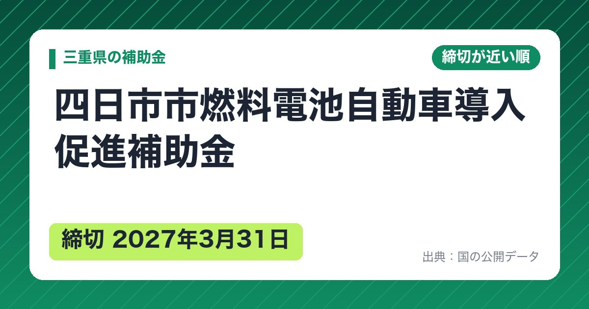

四日市市燃料電池自動車導入促進補助金

締切 2027年3月31日｜上限 20万円
地球温暖化対策の推進およびゼロカーボンシティの構築に資するため、四日市市では、燃料電池自動車（以下「ＦＣＶ」という。）を導入した個人・法人向けの補助金制度を設け、次の内容で募集を行います。
概要
| 対象地域 | 四日市市 |
|---|---|
| 補助上限額 | 20万円 |
| 補助率 | 要確認 |
| 受付期間 | 2026年3月31日 〜 2027年3月31日 |
| 対象の従業員数 | 従業員数の制約なし |
| 利用目的 | 新たな事業を行いたい / 雇用・職場環境を改善したい / 災害（自然災害、感染症等）支援がほしい / 設備整備・IT導入をしたい / エコ・SDGs活動支援がほしい |
| 対象業種 | 漁業 / 建設業 / 製造業 / 電気・ガス・熱供給・水道業 / 情報通信業 / 複合サービス事業 / サービス業（他に分類されないもの） / 公務（他に分類されるものを除く） / 分類不能の産業 / 農業、林業 / 鉱業、採石業、砂利採取業 / 運輸業、郵便業 / 卸売業、小売業 / 金融業、保険業 / 不動産業、物品賃貸業 / 学術研究、専門・技術サービス業 / 宿泊業、飲食サービス業 / 生活関連サービス業、娯楽業 / 教育、学習支援業 / 医療、福祉 |
公募の内容（原文の抜粋）
■目的・概要
ＦＣＶを導入する者に対し、その経費の一部を補助することにより、ＦＣＶの普及を支援し、もって四日市市域における地球温暖化防止対策の推進及びゼロカーボンシティの構築に資することを目的とする。
■根拠法令
四日市市燃料電池自動車導入促進補助金交付規則
■応募資格
次の（１）か（２）のいずれかを満たしている方が補助対象者です。
（１）FCVを購入し、自動車検査証上の所有者及び使用者となっている個人または法人
（ただし、 当該車両の所有権が留保された購入である場合は、自動車検査証上の使用者となっている個人または法人）
（２）４年間以上の賃貸借契約（リース契約）を締結しており、自動車検査証上の使用者となっている個人または法人
注：ただし、本市の市税を滞納している方は補助対象者となりません。
次の（１）～（４）の全てに該当するFCVが補助対象です。
（１）国の補助事業における補助対象車両として、一般社団法人次世代自動車振興センターにより登録されているFCVであること。
（２）補助金の交付を受けようとする年度（令和８年度）に、補助対象者を所有者として初度登録されたFCVであること。
（３）自動車検査証の「使用の本拠の位置」が初度登録時から四日市市内となっているFCVであること。
（４）展示車、試乗車その他販売活動の促進の目的で使用されるFCVでないこと。
■地理条件
自動車検査証の「使用の本拠の位置」が初度登録時から四日市市内となっているFCVであること。
■備考
「補助金交付申請書兼実績報告書」と添付書類一式を提出してください。
【添付書類】
・四日市市が申請者に対して三か月以内に発行した市税の完納証明書
・補助対象自動車の自動車検査証の写し及び自動車検査証記録事項の写し
・契約書や注文書等の当該車両の購入に係る契約が確認できる書面の写し
・当該補助対象自動車の購入費用に係る支払証憑の写し又は全額支払いの手続きが完了していることを証明する書類の写し
※購入の場合は領収書の写し等、ローン・クレジット・保証・割賦等であれば当該支払方式を合意したことが明記されている、申請者が契約者となっている契約書等。
・ローン等による購入で、自動車検査証の所有者と使用者が異なる場合は、保管場所標章番号通知書の写し又は使用者が契約者となっているローン契約書の写し
注：リース契約に伴う申請の場合は、以下の書類もご提出ください。
・申請者が契約者となっている自動車賃貸借契約書の写し
■問合せ先
四日市市 環境政策課
〒５１０-８６０１
四日市市諏訪町１番５号（市役所本庁舎５階）
TEL：（０５９）３５４－８１８８ FAX：（０５９）３５４－４４１２
E-mail: kankyouseisaku@city.yokkaichi.mie.jp
■参照URL
https://www.city.yokkaichi.lg.jp/www/contents/1773038583373/index.html
申請前の準備
- GビズIDプライム（電子申請に必須・無料・発行まで1〜2週間かかることあり）：gbiz-id.go.jp
- 直近の決算書（個人事業主は確定申告書の控え）
- 事業計画（何に使い、どう売上・生産性が上がるか）
- 見積書（買う物・頼む工事の）
ほとんどの補助金は、申請時に直近の決算書（個人は確定申告書）が必要で、交付後も経費の帳簿が求められます。
広告準備に使えるサービス：
・無料の会計自動化ソフト マネーフォワード クラウド会計  （法人の帳簿・決算書づくりを自動化）
（法人の帳簿・決算書づくりを自動化）
・やよいの青色申告オンライン  （個人事業主の青色申告に）
（個人事業主の青色申告に）
三重県のほかの補助金
- 令和７年度（補正） 商用車等の電動化促進事業（建設機械）（締切 2027年1月29日）
- 四日市市中小企業脱炭素経営支援事業費補助金（締切 2027年3月31日）
- 携帯電話等エリア整備事業（締切 2027年3月31日）
- 電波遮へい対策事業（トンネル）（締切 2027年3月31日）
- 【三重県 鈴鹿市】令和8年度創業促進補助金（締切 2027年3月31日）